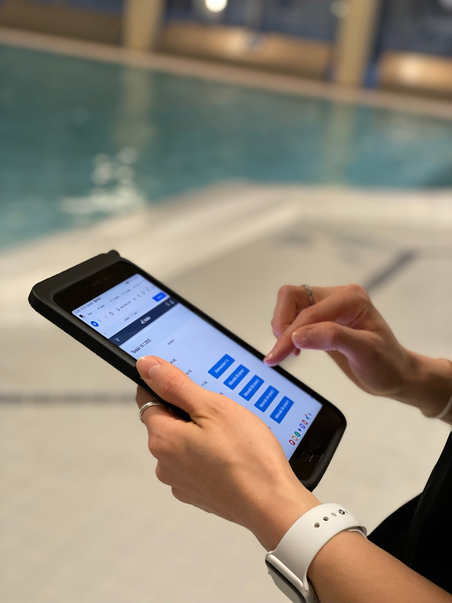

Vantaalla koululaisten uinninopetuksessa on vuosittain noin 13 000 oppilasta. Vielä muutama vuosi sitten tietoa kirjattiin paperille, tilastoja laskettiin käsin ja muutoksia hallittiin Excel-versioiden avulla. Vellamo syntyi tarpeesta tehdä työstä sujuvampaa. Ensimmäisen version rakentaminen toi samalla näkyväksi tarpeen kehittää myös Vantaan omia toimintaprosesseja ja nämä opit hyödynnettiin nykyistä Vellamoa rakennettaessa.
Mila Sjöblom vastaa Vantaan kaupungilla koululaisten uinninopetuksesta, ryhmäliikunnasta ja leiritoiminnasta ja toimii liikunnanohjaajien lähiesihenkilönä. Vantaa on rakentanut uinninopetuksen hallintaan oman järjestelmänsä, Vellamon, Hailer-alustalle. Mila toimii järjestelmän pääkäyttäjänä yhdessä uimaopetuksen koordinaattorin kanssa.
Järjestelmäkehitys ei siis ole Milan tai koordinaattorin varsinainen työ. Se tehdään kaiken muun rinnalla.
Ehkä juuri siksi tiimi osaakin tarkastella Vellamoa ennen kaikkea toimivan työkalun näkökulmasta: toimiiko se silloin, kun uimaopettaja seisoo tabletin kanssa altaan reunalla ja seuraava ryhmä on jo tulossa sisään?

"Paperinen moniste on vähän kertakäyttökamaa"
Vellamoa lähdettiin rakentamaan ennen kaikkea uinninopetuksen prosessien ja työajan käytön tehostamiseksi. Samalla haluttiin kehittää oppilaskohtaista uimataidon seurantaa pidemmällä aikavälillä ja saada kertyvä tieto paremmin näkyviin opetuksen suunnittelun ja päätöksenteon tueksi.
Aiemmin manuaalista työtä oli paljon. Tietoja kirjattiin ja laskettiin käsin sekä koottiin jälkikäteen tilastoiksi. Esimerkiksi uintijaksojen aikana uimaopettajalla oli käytössään paperinen moniste, mutta se jäi helposti kertakäyttöiseksi.
Vellamon avulla saman oppilaan uimataidon kehittymistä voidaan seurata useamman vuoden ajan. Tavoitteena ei ole kerätä tietoa vain keräämisen vuoksi vaan tunnistaa, kuka tarvitsee lisää tukea.
Koululaisten uinninopetus on opetussuunnitelmaan kuuluvaa tavoitteellista toimintaa. Kun uimataidon kehittymisestä kertyy jatkuvasti uutta tietoa, voidaan tunnistaa oppilaita, jotka eivät ole saavuttaneet vuosiluokkansa tavoitteita ja kohdentaa heille lisäopetusta.
Tieto auttaa myös itse opetustunnilla. Uimaopettaja näkee ryhmän taitotason ja pystyy suunnittelemaan opetusta sen mukaan, millaisia uimareita ryhmässä on. Jos oppilas kehittyy jo uintijakson aikana, tieto voidaan päivittää saman tien. Näin myös sijaisella on käytössään ajantasainen kuva ryhmästä. Milan mukaan se tukee sekä opetuksen laatua että turvallisuutta.
"Piti ensin tarkastella meidän prosessia"
Vellamon ensimmäinen versio toi näkyväksi asioita, joita järjestelmävaatimuksiin ei ollut helppo kirjoittaa etukäteen. Kyse ei siis ollut vain teknologiasta. Järjestelmän rakentaminen kannusti samalla tarkastelemaan sitä, miten uinninopetusta Vantaalla oikeastaan haluttiin järjestää.
Järjestelmästä tuli vipu sisäiselle kehittämiselle. Asioita, jotka muuten olisivat ehkä muuttuneet hitaammin, ratkaistiin osana kehitystyötä, jotta Vellamo saatiin palvelemaan arkea. Nykyisestä Vellamosta Mila puhuu luottavaisesti:
Valmis ei kuitenkaan tarkoita muuttumatonta. Uimahalliarki, palvelut ja toimintaympäristö muuttuvat jatkuvasti. Hailer suunnitteli Vellamon rakenteen niin, että Vantaa voi mukauttaa järjestelmää itse myös käyttöönoton jälkeen. Kaikki muutokset eivät vaadi uutta kehitysprojektia: osa onnistuu Vantaan omin voimin, osassa tarvitaan Hailer-tiimin apua ja osa vaatii laajempaa jatkokehitystä. Mila pitää tärkeänä sitä, ettei jokaista poikkeusta varten tarvitse rakentaa kokonaan uutta ratkaisua.
Kehittämisessä on hänen mukaansa ollut tärkeää myös se, että apua on saanut silloin, kun sitä on tarvittu.
Tieto on nopeammin saatavilla, luotettavampaa ja kaikkien nähtävillä
Tänä päivänä Milan omassa työssä suurin muutos on tiedon saatavuus. Esihenkilönä hän pystyy itse katsomaan esimerkiksi sijaisjärjestelyjä varten tietyn koulun uintiryhmien tietoja ja seuraamaan, miten opetus etenee. Tieto ei jää paperille tai yksittäisen työntekijän haltuun.
Muutos näkyy vielä konkreettisemmin altaan reunalla. Oppilaiden taitotasoja voidaan päivittää uintijakson aikana suoraan samaan kokonaisuuteen ja tieto on tarvittaessa myös sijaisen käytettävissä.
Vellamossa käytettävät taitotasot auttavat uimaopettajaa hahmottamaan ryhmän jo ennen opetusta. Ryhmä, jossa suurin osa on vahvoja uimareita, vaatii erilaista opetuksen suunnittelua kuin ryhmä, jossa moni vasta harjoittelee perustaitoja.
Myös huoltajille suunnattua viestintää on kehitetty ja Vellamosta on saatavilla sähköinen oppilaskohtainen huoltajakirje, joka sisältää tiedon lapsen uimataidosta sekä tietoa uimataidon tärkeydestä ja vapaa-ajan palveluista.
800 ryhmää oikeaan paikkaan oikeaan aikaan
Vellamo ei ole vain uimahallissa käytettävä seurantatyökalu. Sillä suunnitellaan myös uintivuoroja.
Vantaalla ryhmiä onkin vuodessa yli 800, joten muutokset kasvattavat nopeasti virheiden mahdollisuutta. Jos vuorot ovat useissa Excel-versioissa ja ryhmältä poistetaan yksi varaus, pitää muistaa myös antaa korvaava vuoro ja päivittää sama tieto oikeisiin paikkoihin.
Vellamossa ryhmät ja niiden tarpeet mm. kuljetusten osalta säilyvät kokonaisuudessa mukana. Tämä oli tarpeellinen kehitysaskel palvelujen toiminnan kannalta, koska uimahalliarki ei pysy paikallaan. Halleja remontoidaan, opetusta joudutaan siirtämään ja samassa altaassa voi poikkeustilanteessa olla kaksi luokkaa yhtä aikaa. Samaan aikaan käynnistyy uusia palveluita ja hankkeita, jotka vaikuttavat uinninopetuksen arkeen.
Yksi Milan tärkeimmistä lähtökohdista järjestelmää rakennettaessa on ollut poikkeusten ennakointi. Järjestelmän pitää pystyä mukautumaan myös siihen hetkeen, kun normaaliksi suunniteltu toimintatapa ei yhtäkkiä olekaan mahdollinen.
Data kertoo, mihin opetusta tarvitaan
Yksi suurista muutoksista liittyy tilastointiin. Aikaisemmin uimaopettajat laskivat kävijämääriä riveittäin ja tiedot toimitettiin eteenpäin kauden jälkeen. Nyt tieto syntyy osana tekemistä.
Samalla seurattavan tiedon määrä on kasvanut. Enää ei tarkastella pelkästään osallistujamääriä tai sitä, kuinka moni lapsi ui pienessä tai isossa altaassa. Vellamosta voidaan nähdä esimerkiksi, missä vaiheessa oppilas siirtyy taitotasolta toiselle.
Sillä on Milan mukaan suora yhteys tiedolla johtamiseen. Vantaalla voidaan tarkastella eroja koulujen ja vuosiluokkien välillä ja miettiä sen perusteella, mihin rajallisia resursseja kannattaa kohdentaa.
Aiemmin resursseja kohdennettiin pitkälti samalla tavalla kaikille. Nyt tieto auttaa tunnistamaan tarkemmin, missä opetuksen tarve on suurin.
Kun järjestelmä toimii, arki ei keskeydy
Mila mittaa järjestelmän onnistumista myös hyvin käytännöllisesti.
Kun uimaopettajat aloittivat järjestelmän käytön, Mila varautui ensimmäisinä viikkoina siihen, että puhelin alkaa soida.
Se on hänelle yksi onnistumisen mittareista. Kun järjestelmä toimii arjessa, uimaopettajien ei tarvitse keskeyttää työtään selvittääkseen, miten jokin asia tehdään eikä esihenkilön päivä täyty ad hoc -ongelmien ratkaisemisesta.
Mila tunnistaa saman ilmiön myös muista vastuullaan olevista palveluista. Pienikin ongelma järjestelmässä tai tiedonkulussa voi synnyttää nopeasti ketjun, jossa työntekijät ja esihenkilöt joutuvat selvittämään tilannetta kesken toiminnan. Siksi järjestelmän pitää toimia ennen kaikkea siellä, missä varsinainen työ tapahtuu.
Teknologia tukee muuttuvaa työtä
Mila suhtautuu teknologiaan myönteisesti silloin, kun siitä on konkreettista hyötyä työssä. Uimaopettajan työ tapahtuu lasten kanssa altaan äärellä. Teknologia voi helpottaa työtä tilanteessa, jossa työn vaatimukset kasvavat ja opetusryhmät muuttuvat.
Mila nostaa esiin lasten heikentyneen uimataidon, henkilöstön jaksamisen ja yhä moninaisemmat opetusryhmät. Ryhmässä voi olla lapsia, jotka ovat ensimmäistä kertaa uimahallissa tai joilla ei ole yhteistä kieltä opettajan kanssa. Silloin myös opetuksen tueksi tarvitaan uusia keinoja. Vantaalla hyödynnetään esimerkiksi virtuaalisia näyttöjä, joiden avulla harjoitteita voidaan näyttää visuaalisesti opettajan puheen rinnalla.
Ensin oma prosessi, sitten järjestelmä
Milan tärkein neuvo toiselle kunnalle ei lopulta koske järjestelmän ominaisuuksia.
Ennen järjestelmän määrittelyä kannattaa ymmärtää, miten oma työ todella tehdään ja kuinka hyvin palveluprosessi toimii.
Vantaalla yksi tärkeimmistä havainnoista oli se, kuinka paljon esimerkiksi koulujen toimintatavat voivat erota toisistaan. Yhdessä koulussa toimiva malli ei välttämättä kuvaa neljänkymmenen muun koulun arkea.
Siksi Mila neuvoisi käymään nykyisen prosessin henkilöstön kanssa läpi jo ennen vaatimusmäärittelyä.
Miten työ oikeasti tehdään? Missä ovat poikkeukset? Mikä nykyisessä toimintatavassa pitäisi joka tapauksessa muuttaa? Ketkä ihmiset osaavat kuvata arjen eri tilanteet?
Myös tulevaa kannattaa yrittää hahmottaa edes muutaman askeleen päähän. Kaikkea ei voi ennustaa, mutta jos tiedetään, että uimahalleja remontoidaan, palvelut laajenevat tai toimintatavat muuttuvat, järjestelmän pitäisi pystyä taipumaan näihin tilanteisiin.
Toinen neuvo on yksinkertaisempi:
Kaikkien ei tarvitse innostua tabletista ensimmäisenä päivänä. Työntekijät saadaan mukaan, kun muutokseen annetaan riittävästi tukea ja aikaa. Lopulta kyse ei ole vain järjestelmän käyttöönotosta vaan siitä, että järjestelmä palvelee työtä, jota ihmiset oikeasti tekevät.
Haluatko tutustua uinninhallintajärjestelmä Vellamoon? Se löytyy täältä.
Tutustu Vellamoon →